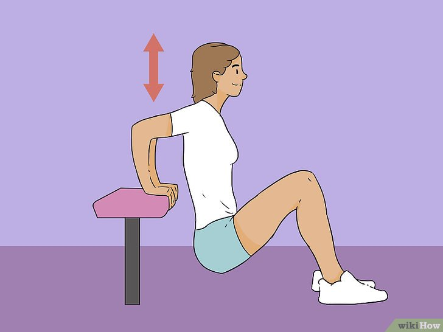

Deberás estar preparada para cambiar tu alimentación. Para conseguir una cintura pequeña, tendrás que bajar de peso, lo cual no alcanzarás solo con el ejercicio, también tendrás que adoptar una alimentación saludable y reducir tu ingesta calórica para poder ver los resultados. Para hacerlo, tendrás que tener una disciplina y determinación férreas. Además de reducir tu ingesta calórica, hay algunas opciones alimenticias que te ayudarán específicamente a reducir tu cintura.
Por ejemplo, en un estudio científico, las personas que comían cereales integrales (además de 5 porciones de frutas y verduras, 3 porciones de productos lácteos bajos en grasa y 2 porciones de carne magra, pescado o aves) perdieron más grasa abdominal que el grupo que comía la misma dieta, pero a base de cereales refinados.[1]
Recuerda que para bajar ½ kilo (1 libra) de peso, tendrás que eliminar 3500 calorías de tu alimentación. Los especialistas de la salud recomiendan que el nivel óptimo para bajar de peso saludablemente es de ½ o 1 kilo (1 a 2 libras) a la semana, por eso no se recomienda dejar de comer o seguir dietas de moda para lograrlo más rápidamente.
Empieza el día con un desayuno saludable. Arrancar el día con un desayuno balanceado y saludable será perfecto a la hora de hacer dieta. Un buen desayuno estimula el metabolismo, lo cual hará que quemes más calorías a lo largo del día. También te mantendrá saciada por más tiempo, así tendrás una menor tendencia a comer bocadillos en la mañana y en la tarde, lo que podría ocasionar que termines consumiendo un nivel más elevado de calorías en general.
Para tomar un desayuno balanceado perfecto, procura comer una combinación de cereales y pan integral, huevos por su alta cantidad de proteínas y frutas con muchas vitaminas. Si vas a desayunar camino al trabajo, tómate un batido de frutas y una barra de cereal, así tendrás algo nutritivo que te saciará y será práctico.
También deberás beber un vaso de agua antes del desayuno (y de cualquier otra comida del día), porque evitará que tu cuerpo confunda la sed con el hambre, lo que podría llevarte a comer más de la cuenta. Además te ayudará a estar hidratada, cosa que siempre será muy importante.
Come porciones más pequeñas y más frecuencia. Es muy común ver personas que tratan de no comer bocado entre comidas, lo que finalmente hará que cuando la comida esté frente a ellas, terminen comiendo mucho más de lo necesario. Uno de los secretos mejores guardados de los que logran resultados exitosos haciendo dieta es que en realidad comen con mayor frecuencia durante el día, solo que comen porciones más pequeñas.
Comer porciones más pequeñas y más frecuentes evitará que la persona tenga demasiada hambre, lo que hará que coma en menor cantidad. También estimulará el metabolismo, lo cual hará que el organismo queme más calorías en el día.
Procura comer 6 porciones pequeñas al día, en vez de 3 porciones grandes. Si no estás con un hambre constante, verás que a largo plazo podrás cumplir tu plan para bajar de peso con mayor facilidad.
